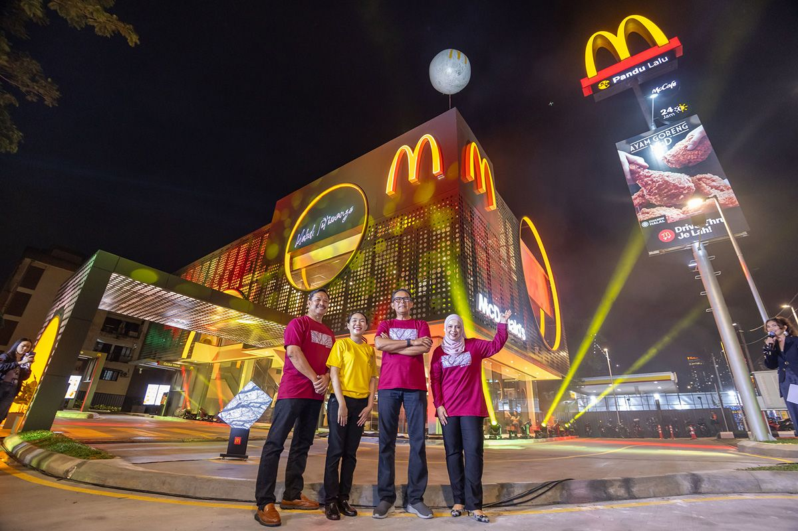
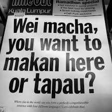

One thing I found interesting about this chapter is that globalization does not affect culture in only one way. Instead, Pieterse explains that there are three different paradigms for understanding cultural change. Depending on which perspective we use, globalization can either create more differences, make cultures more similar, or encourage them to mix together. Malaysia becomes the center point of this case study because of its unique history.
I had assumed Globalization to be just the idea of mixing cultures. However, I now understand that it is much more than just sharing cultures and being 1 big family. There are multiple different perspectives to take and each perspective will show how people view globalization; whether it be in a good light or in a bad light.
Paradigm One — Cultural Differentialism
The first paradigm argues that cultural differences are lasting and should remain separate. Pieterse discusses Samuel Huntington's Clash of Civilizations as one example of this perspective. Instead of seeing globalization as bringing people together, this view suggests that greater global interaction may actually increase conflict because civilizations have fundamentally different identities. As discussed in a previous chapter, politics can also play a huge role in this "clash", which is exactly what we see happen in Malaysia. Power struggles and differences in either religion or race caused a great friction between communities.
"There are three, and only three, perspectives on cultural difference: cultural differentialism or lasting difference, cultural convergence or growing sameness, and cultural hybridization or ongoing mixing." Pieterse, Chapter 4.
Just by understanding the 1st paradigm do I see that globalization and humanities perspective can easily divide a nation. This quote shows that there will always be a difference in how a people and a country see culture being integrated into their lives.
Paradigm Two — Cultural Convergence
The second paradigm almost says the opposite. Instead of emphasizing difference, it argues that globalization pushes societies toward becoming increasingly similar. Pieterse uses "McDonaldization" as one of the best-known examples of this idea, where efficiency, standardization, and consumer culture spread across different parts of the world. With the world growing everyday, there is always another country that will advertise it's more efficient or beautiful methods. It is whether a country and people are willing to integrate it into their lives.

Interesting thing enough, when Malaysia was under British rule, we spoke a lot of the English Language. It became a norm to the point even after we declared independence, it became a necessary language. In some way, it has catapulted us into become a global nation where we can easily commuinicate with other powerful countries. If we look into the future dimension, we see that our foreign policy and stance has reached a level of global standardization, in which we have perfected the way we represent and advertise our culture.
Paradigm Three — Cultural Hybridization
The third paradigm was probably the one I find to be the most accurate to what Malaysia is today. Rather than focusing on conflict or sameness, hybridization argues that globalization encourages cultures to mix together and create something new. Instead of replacing local traditions, new ideas become blended with existing ones.
This perspective feels especially relevant to Malayisa due to its cultural influences in everyday life. We see all it's effects accross all dimensions. The idea of an open ended cultural exchange perfectly describes a translocal culture.

How does hybridization fit into Malaysia?
Malaysia is the literal prime example of hybridization. throughout our history, malaysian society has never existed in complete isolation. Our colonial history, and modern technology have all contributed to the country's cultural diversity. Rather than becoming identical or remaining completely separate, many traditions continue to influence one another in everyday life.
My favourite aspect of hybridization is our language. Those that grew up in public schools would have mixed with kids of different cultures and family backgrounds. This mixing and fusion would literally change the way we speak. We would be mutli-lingual at a young age, and not be fluent in 1 language because we would "campur" our language into a single sentence.

What I Learned
- Cultural differentialism views globalization as reinforcing cultural differences.
- Cultural convergence argues that globalization encourages cultural standardization.
- Cultural hybridization sees globalization as an ongoing process of cultural mixing.
- Pieterse argues that evidence from around the world most strongly supports the hybridization perspective.
Notes
- Jan Nederveen Pieterse, Globalization and Culture: Global Mélange, Chapter 4, "Globalization and Culture: Three Paradigms."